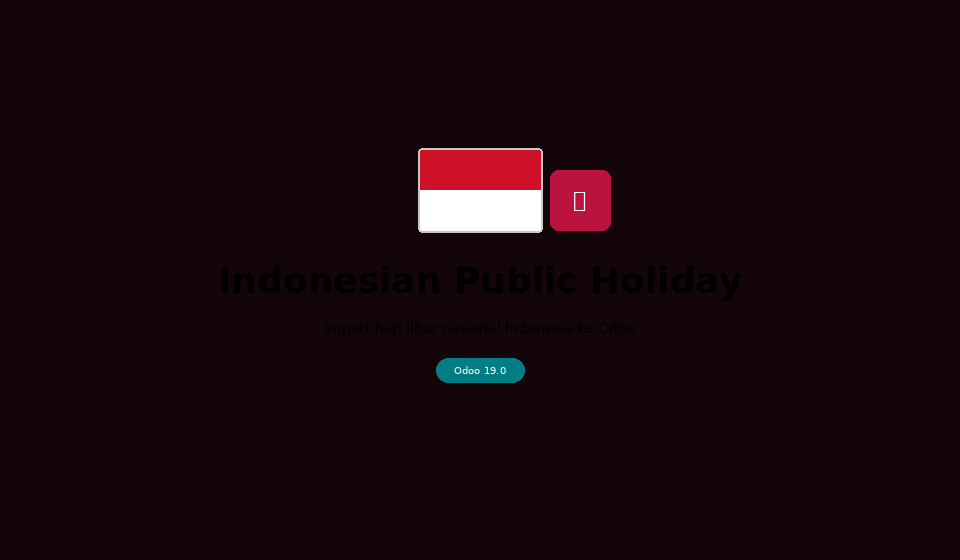

Import hari libur nasional Indonesia ke Odoo Time Off secara otomatis dari API — Odoo 19
Import hari libur Indonesia dengan mudah langsung ke sistem Time Off Odoo
Fetch data hari libur dari api-hari-libur.vercel.app per tahun secara real-time.
Jika API tidak tersedia, data built-in untuk tahun 2025 & 2026 digunakan sebagai cadangan.
Mode Global langsung memasukkan data ke Time Off → Configuration → Public Holidays.
Lihat daftar lengkap hari libur yang akan diimport sebelum benar-benar menyimpan ke Odoo.
Cek otomatis hari libur yang sudah ada — tidak ada entri ganda meskipun dijalankan berkali-kali.
Terapkan hari libur ke jadwal kerja tertentu, atau global untuk semua karyawan sekaligus.
Alur lengkap dari buka wizard hingga hari libur muncul di Public Holidays

Urutan prioritas pengambilan data hari libur
https://api-hari-libur.vercel.app/api?year=YYYYhttps://dayoffapi.vercel.app/api?year=YYYY2025: 26 hari | 2026: 14 hari (estimasi)26 hari libur nasional dan cuti bersama (termasuk Idul Fitri)
cp -r ydod_indonesian_public_holiday/ /odoo/custom-addons/
Restart Odoo, buka Apps → cari "Indonesian Public Holiday" → Install.
Time Off → Configuration → Indonesian Public Holidays → Import Hari Libur Indonesia
Pilih Tahun yang ingin diimport dan Import Mode:
| Mode | Keterangan |
|---|---|
| Global Public Holidays | Masuk ke Time Off → Public Holidays, berlaku semua karyawan |
| Per Work Schedule | Terapkan ke jadwal kerja tertentu saja |
| Keduanya | Buat entri global sekaligus per-calendar |
Klik Preview untuk melihat daftar hari libur sebelum import.
Klik Import Sekarang. Notifikasi sukses menampilkan jumlah entri yang dibuat dan dilewati.
Buka Time Off → Configuration → Public Holidays untuk memastikan data sudah masuk.
| Masalah | Solusi |
|---|---|
| Data tidak muncul di Public Holidays | Pastikan Import Mode diset ke Global Public Holidays. Mode per-calendar tidak muncul di menu Public Holidays global. |
| API error / tidak ada data | Modul otomatis fallback ke API kedua, lalu ke data offline. Cek koneksi internet server Odoo jika selalu menggunakan data offline. |
| Data duplikat setelah import ulang | Aktifkan opsi Skip Duplikat di wizard (default sudah aktif). Jika sudah terlanjur duplikat, hapus manual dari menu Public Holidays. |
| Tahun yang diinginkan belum tersedia di API | Data built-in tersedia untuk 2025 dan 2026. Untuk tahun lain, tunggu update API atau tambahkan data offline secara manual di kode. |